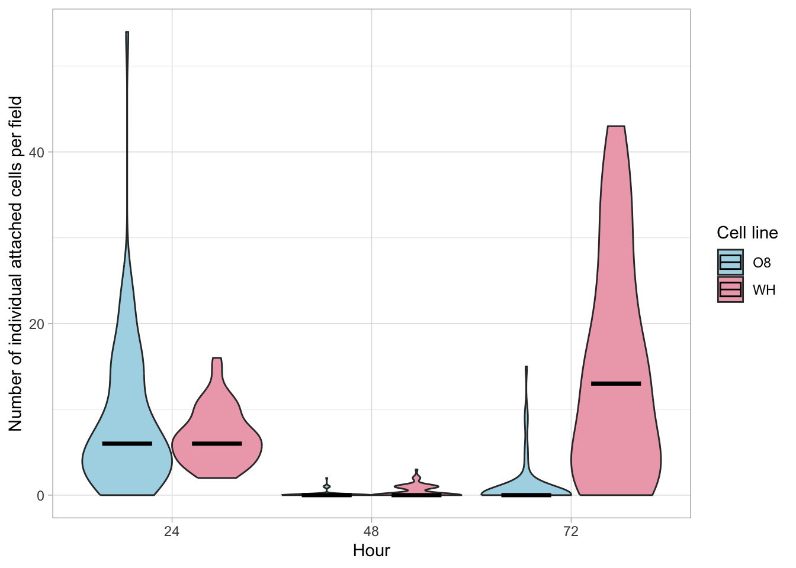
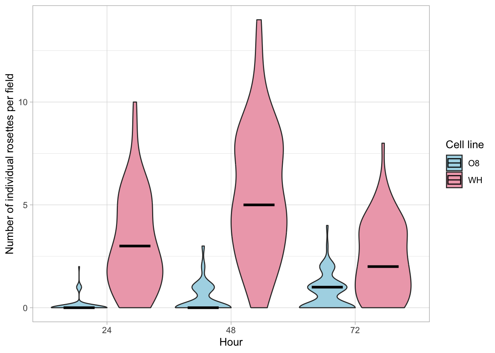

Last updated: 2024-05-07
Checks: 6 1
Knit directory: learning_workflowr/
This reproducible R Markdown analysis was created with workflowr (version 1.7.1). The Checks tab describes the reproducibility checks that were applied when the results were created. The Past versions tab lists the development history.
Great! Since the R Markdown file has been committed to the Git repository, you know the exact version of the code that produced these results.
Great job! The global environment was empty. Objects defined in the global environment can affect the analysis in your R Markdown file in unknown ways. For reproduciblity it’s best to always run the code in an empty environment.
The command set.seed(20240221) was run prior to running
the code in the R Markdown file. Setting a seed ensures that any results
that rely on randomness, e.g. subsampling or permutations, are
reproducible.
Great job! Recording the operating system, R version, and package versions is critical for reproducibility.
Nice! There were no cached chunks for this analysis, so you can be confident that you successfully produced the results during this run.
Using absolute paths to the files within your workflowr project makes it difficult for you and others to run your code on a different machine. Change the absolute path(s) below to the suggested relative path(s) to make your code more reproducible.
| absolute | relative |
|---|---|
| ~/Desktop/Coding/workflowr/learning_workflowr/data/aa_s.csv | data/aa_s.csv |
| ~/Desktop/Coding/workflowr/learning_workflowr/data/aa_ir.csv | data/aa_ir.csv |
| ~/Desktop/Coding/workflowr/learning_workflowr/data/aa_mr.csv | data/aa_mr.csv |
Great! You are using Git for version control. Tracking code development and connecting the code version to the results is critical for reproducibility.
The results in this page were generated with repository version 22a4db4. See the Past versions tab to see a history of the changes made to the R Markdown and HTML files.
Note that you need to be careful to ensure that all relevant files for
the analysis have been committed to Git prior to generating the results
(you can use wflow_publish or
wflow_git_commit). workflowr only checks the R Markdown
file, but you know if there are other scripts or data files that it
depends on. Below is the status of the Git repository when the results
were generated:
Ignored files:
Ignored: .DS_Store
Ignored: .Rhistory
Ignored: .Rproj.user/
Ignored: analysis/.DS_Store
Note that any generated files, e.g. HTML, png, CSS, etc., are not included in this status report because it is ok for generated content to have uncommitted changes.
These are the previous versions of the repository in which changes were
made to the R Markdown (analysis/second-analysis.Rmd) and
HTML (docs/second-analysis.html) files. If you’ve
configured a remote Git repository (see ?wflow_git_remote),
click on the hyperlinks in the table below to view the files as they
were in that past version.
| File | Version | Author | Date | Message |
|---|---|---|---|---|
| Rmd | 22a4db4 | fstclair | 2024-05-07 | Publish about page and all pages |
| html | 0aacf12 | fstclair | 2024-05-07 | Build site. |
| Rmd | 7b6dc19 | fstclair | 2024-05-07 | Publish about page and all pages |
| html | 1d3f057 | fstclair | 2024-05-07 | Build site. |
| Rmd | f5ba1e8 | fstclair | 2024-05-07 | Publish about page and all pages |
| html | 528495f | fstclair | 2024-05-07 | Build site. |
| html | 9faacc6 | fstclair | 2024-05-07 | Build site. |
| html | c80f022 | fstclair | 2024-05-07 | Build site. |
| Rmd | 11991dd | fstclair | 2024-05-07 | Publish about page and all pages |
| html | 76ca419 | fstclair | 2024-05-07 | Build site. |
| html | 6b46151 | fstclair | 2024-05-07 | Build site. |
| html | 3cb3fb6 | fstclair | 2024-05-07 | Build site. |
| html | 157d4f1 | fstclair | 2024-05-07 | Build site. |
| Rmd | 1062bcb | fstclair | 2024-05-07 | Publish about page and all pages |
| html | de1c6fe | fstclair | 2024-05-07 | Build site. |
| Rmd | 2ecad13 | fstclair | 2024-05-07 | Publish about page and all pages |
| html | c214b3c | fstclair | 2024-05-07 | Build site. |
| Rmd | 79fe6c5 | fstclair | 2024-05-07 | Publish about page and all pages |
| Rmd | 648f867 | fstclair | 2024-05-07 | website updates |
| html | 9eecf30 | fstclair | 2024-05-07 | Build site. |
| Rmd | a891ce9 | fstclair | 2024-05-07 | Publish about page and all pages |
| html | 42cdf49 | fstclair | 2024-05-06 | Build site. |
| Rmd | 55157e3 | fstclair | 2024-05-06 | Publish about page and all pages |
| html | c0b5546 | fstclair | 2024-03-17 | Build site. |
| html | fba4ce1 | fstclair | 2024-03-17 | Build site. |
| Rmd | 393ea9c | fstclair | 2024-03-14 | images update |
| html | 393ea9c | fstclair | 2024-03-14 | images update |
| html | 943cb56 | fstclair | 2024-03-14 | Build site. |
| Rmd | 5a91037 | fstclair | 2024-03-14 | Publish about page and all pages |
| html | 02db3a0 | fstclair | 2024-03-14 | Build site. |
| html | 747116e | fstclair | 2024-03-14 | Build site. |
| Rmd | fe84fea | fstclair | 2024-03-14 | Publish about page and all pages |
| html | 25c6872 | fstclair | 2024-03-13 | Build site. |
| html | 56ac182 | fstclair | 2024-03-12 | Build site. |
| Rmd | a1cf896 | fstclair | 2024-03-12 | Publish about page and all pages |
| html | 712ef7f | fstclair | 2024-03-05 | Build site. |
| html | ac916ab | fstclair | 2024-03-05 | Build site. |
| html | 1e3dc02 | fstclair | 2024-03-05 | Build site. |
| html | 4ea6bfa | fstclair | 2024-03-05 | Build site. |
| html | e764686 | fstclair | 2024-03-05 | Build site. |
| Rmd | 75ed720 | fstclair | 2024-03-05 | Publish about page and all pages |
| html | 2f192df | fstclair | 2024-03-01 | Build site. |
| html | 94da33b | fstclair | 2024-03-01 | Build site. |
| html | cf7f56a | fstclair | 2024-03-01 | Build site. |
| Rmd | a83e305 | fstclair | 2024-03-01 | Publish about page and all pages |
Our lab works with two strains of C. bombi from laboratory bumblebees.
We want to quantify the attachment of two culture-adapted cell lines to explore infection capabilities.
After 24 hours, dishes of cells were gently washed with 2 mL of PBS for clear imaging of 25 random fields for analysis.
After imaging, dishes were gently washed with 2 mL of media and resuspended in 2 mL media for the next 24 hour incubation period.

Figure 1. Violin plot of 3 replicates of individually counted cells per field in cell lines 08.076 (blue) and WHA1 (pink) over 72 hours. Black crossbars represent the mean. The data show a similar amount of singly attached cells at 24 and 48 hours between the two cell lines, and an increase in WHA1 singly attached cells at 72 hours. This increase in WHA1 at 72 hours is most likely due to cells dividing in the center of large rosettes and not having enough room to adhere, but still having the signal to adhere, so they lift up and re-attach as quickly as they can (see Figure 4).
$statistics
MSerror Df Mean CV MSD
41.25417 444 5.273333 121.8004 3.002063
$parameters
test name.t ntr StudentizedRange alpha
Tukey AA_08_WH_S_R$X1 6 4.047776 0.05
$means
AA_08_WH_S_R$X2 std r se Min Max Q25 Q50 Q75
OE24 8.62666667 8.4530074 75 0.7416574 0 54 3 6 13.5
OE48 0.09333333 0.3358464 75 0.7416574 0 2 0 0 0.0
OE72 0.93333333 2.6114785 75 0.7416574 0 15 0 0 0.0
WH24 6.85333333 3.2536604 75 0.7416574 2 16 4 6 9.0
WH48 0.45333333 0.6635965 75 0.7416574 0 3 0 0 1.0
WH72 14.68000000 12.5742766 75 0.7416574 0 43 3 13 23.5
$comparison
NULL
$groups
AA_08_WH_S_R$X2 groups
WH72 14.68000000 a
OE24 8.62666667 b
WH24 6.85333333 b
OE72 0.93333333 c
WH48 0.45333333 c
OE48 0.09333333 c
attr(,"class")
[1] "group"
Figure 2. Grouped violin plot of 3 replicates of individual rosettes per field counted in cell lines 08.076 (blue) and WHA1 (pink) over 72 hours. Black crossbars represent the mean. The data show in increase of WHA1 rosettes in all three time points. A decrease of WHA1 individual rosettes at 72 hours can be explained by the increase of WHA1 merged rosettes at 72 hours (see Figures 3 and 4).
$statistics
MSerror Df Mean CV MSD
3.311471 444 2.053333 88.62394 0.8505432
$parameters
test name.t ntr StudentizedRange alpha
Tukey AA_08_WH_IR_R$X1 6 4.047776 0.05
$means
AA_08_WH_IR_R$X2 std r se Min Max Q25 Q50 Q75
OE24 0.1066667 0.3515730 75 0.210126 0 2 0 0 0
OE48 0.4266667 0.7008361 75 0.210126 0 3 0 0 1
OE72 0.7066667 0.8506489 75 0.210126 0 4 0 1 1
WH24 3.1333333 2.3094011 75 0.210126 0 10 1 3 5
WH48 5.5466667 3.1463979 75 0.210126 0 14 3 5 8
WH72 2.4000000 1.8158462 75 0.210126 0 8 1 2 4
$comparison
NULL
$groups
AA_08_WH_IR_R$X2 groups
WH48 5.5466667 a
WH24 3.1333333 b
WH72 2.4000000 b
OE72 0.7066667 c
OE48 0.4266667 c
OE24 0.1066667 c
attr(,"class")
[1] "group"
Figure 3. Grouped violin plot of 3 replicates of merged rosettes per field counted in cell lines 08.076 (blue) and WHA1 (pink) over 72 hours. Black crossbars represent the mean. The data show that while the 08.076 cell line remains a consistent low amount of merged rosettes, the WHA1 cell line gradually increases in merged rosette counts over 72 hours.
$statistics
MSerror Df Mean CV MSD
0.9654054 444 0.4355556 225.5856 0.4592411
$parameters
test name.t ntr StudentizedRange alpha
Tukey AA_08_WH_MR_R$X1 6 4.047776 0.05
$means
AA_08_WH_MR_R$X2 std r se Min Max Q25 Q50 Q75
OE24 0.00000000 0.0000000 75 0.1134552 0 0 0 0 0
OE48 0.00000000 0.0000000 75 0.1134552 0 0 0 0 0
OE72 0.01333333 0.1154701 75 0.1134552 0 1 0 0 0
WH24 0.01333333 0.1154701 75 0.1134552 0 1 0 0 0
WH48 0.34666667 0.6258688 75 0.1134552 0 2 0 0 1
WH72 2.24000000 2.3182006 75 0.1134552 0 9 0 1 4
$comparison
NULL
$groups
AA_08_WH_MR_R$X2 groups
WH72 2.24000000 a
WH48 0.34666667 b
WH24 0.01333333 b
OE72 0.01333333 b
OE24 0.00000000 b
OE48 0.00000000 b
attr(,"class")
[1] "group"Figure 4. Sample images of 08.076 (08) and WHA1 (WH) attachment assay at 24, 48, and 72 hours. A clear difference in attachment efficiency can be seen between the two cell lines, with a dramatic increase in attached cells in the WH line.
C. bombi cell line WHA1 has a greater attachment efficieny in vitro and has shown the ability to infect laboratory bumblebees (in vivo attachment) and will therefore be used for all future experiments.
Adapted from Denecke, S., 2022 Created using biorender.com
sessionInfo()R version 4.3.2 (2023-10-31)
Platform: aarch64-apple-darwin20 (64-bit)
Running under: macOS Ventura 13.2.1
Matrix products: default
BLAS: /Library/Frameworks/R.framework/Versions/4.3-arm64/Resources/lib/libRblas.0.dylib
LAPACK: /Library/Frameworks/R.framework/Versions/4.3-arm64/Resources/lib/libRlapack.dylib; LAPACK version 3.11.0
locale:
[1] en_US.UTF-8/en_US.UTF-8/en_US.UTF-8/C/en_US.UTF-8/en_US.UTF-8
time zone: America/New_York
tzcode source: internal
attached base packages:
[1] stats graphics grDevices utils datasets methods base
other attached packages:
[1] agricolae_1.3-7 readr_2.1.5 viridis_0.6.5 viridisLite_0.4.2
[5] hrbrthemes_0.8.7 forcats_1.0.0 ggplot2_3.4.4 dplyr_1.1.4
[9] tidyr_1.3.1 workflowr_1.7.1
loaded via a namespace (and not attached):
[1] tidyselect_1.2.0 farver_2.1.1 fastmap_1.1.1
[4] fontquiver_0.2.1 promises_1.2.1 digest_0.6.34
[7] mime_0.12 lifecycle_1.0.4 cluster_2.1.6
[10] gfonts_0.2.0 ellipsis_0.3.2 processx_3.8.3
[13] magrittr_2.0.3 compiler_4.3.2 rlang_1.1.3
[16] sass_0.4.8 tools_4.3.2 utf8_1.2.4
[19] yaml_2.3.8 knitr_1.45 labeling_0.4.3
[22] bit_4.0.5 curl_5.2.0 httpcode_0.3.0
[25] withr_3.0.0 purrr_1.0.2 grid_4.3.2
[28] fansi_1.0.6 git2r_0.33.0 AlgDesign_1.2.1
[31] gdtools_0.3.6 xtable_1.8-4 colorspace_2.1-0
[34] extrafontdb_1.0 scales_1.3.0 MASS_7.3-60.0.1
[37] crul_1.4.0 cli_3.6.2 rmarkdown_2.25
[40] crayon_1.5.2 generics_0.1.3 rstudioapi_0.15.0
[43] httr_1.4.7 tzdb_0.4.0 cachem_1.0.8
[46] stringr_1.5.1 parallel_4.3.2 vctrs_0.6.5
[49] jsonlite_1.8.8 fontBitstreamVera_0.1.1 callr_3.7.3
[52] hms_1.1.3 bit64_4.0.5 systemfonts_1.0.5
[55] jquerylib_0.1.4 glue_1.7.0 ps_1.7.6
[58] stringi_1.8.3 gtable_0.3.4 later_1.3.2
[61] extrafont_0.19 munsell_0.5.0 tibble_3.2.1
[64] pillar_1.9.0 htmltools_0.5.7 R6_2.5.1
[67] rprojroot_2.0.4 vroom_1.6.5 evaluate_0.23
[70] shiny_1.8.0 lattice_0.22-5 highr_0.10
[73] fontLiberation_0.1.0 httpuv_1.6.14 bslib_0.6.1
[76] Rcpp_1.0.12 gridExtra_2.3 nlme_3.1-164
[79] Rttf2pt1_1.3.12 whisker_0.4.1 xfun_0.42
[82] fs_1.6.3 getPass_0.2-4 pkgconfig_2.0.3